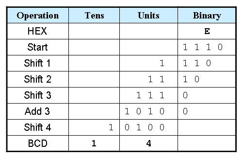
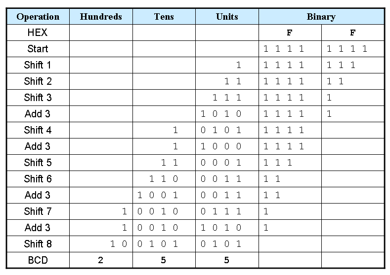
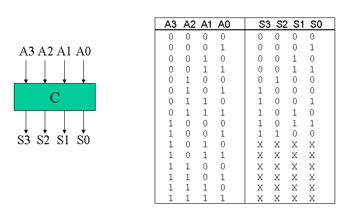
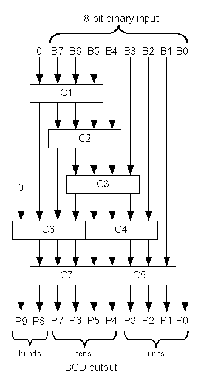

Binary to BCD Converter¶
| Author: | John Loomis |
|---|---|
| source: | http://www.johnloomis.org/ece314/notes/devices/binary_to_BCD/bin_to_bcd.html |
| Reference: | course materials from Prof. Richard E. Haskell |
| Date: | 2004-01-04 |
Shift and Add-3 Algorithm
- Shift the binary number left one bit.
- If 8 shifts have taken place, the BCD number is in the Hundreds, Tens, and Units column.
- If the binary value in any of the BCD columns is 5 or greater, add 3 to that value in that BCD column.
- Go to 1.
| Operation | Hundreds | Tens | Units | Binary | |
|---|---|---|---|---|---|
| HEX | F | F | |||
| Start | 1 1 1 1 | 1 1 1 1 | |||
Example 1: Convert hex E to BCD
Example 2: Convert hex FF to BCD
Truth table for Add-3 Module
Here is a Verilog module for this truth table.
module add3(in,out);
input [3:0] in;
output [3:0] out;
reg [3:0] out;
always @ (in)
case (in)
4'b0000: out <= 4'b0000;
4'b0001: out <= 4'b0001;
4'b0010: out <= 4'b0010;
4'b0011: out <= 4'b0011;
4'b0100: out <= 4'b0100;
4'b0101: out <= 4'b1000;
4'b0110: out <= 4'b1001;
4'b0111: out <= 4'b1010;
4'b1000: out <= 4'b1011;
4'b1001: out <= 4'b1100;
default: out <= 4'b0000;
endcase
endmodule
Binary-to-BCD Converter Module
Here is a structural Verilog module corresponding to the logic diagram.
module binary_to_BCD(A,ONES,TENS,HUNDREDS);
input [7:0] A;
output [3:0] ONES, TENS;
output [1:0] HUNDREDS;
wire [3:0] c1,c2,c3,c4,c5,c6,c7;
wire [3:0] d1,d2,d3,d4,d5,d6,d7;
assign d1 = {1'b0,A[7:5]};
assign d2 = {c1[2:0],A[4]};
assign d3 = {c2[2:0],A[3]};
assign d4 = {c3[2:0],A[2]};
assign d5 = {c4[2:0],A[1]};
assign d6 = {1'b0,c1[3],c2[3],c3[3]};
assign d7 = {c6[2:0],c4[3]};
add3 m1(d1,c1);
add3 m2(d2,c2);
add3 m3(d3,c3);
add3 m4(d4,c4);
add3 m5(d5,c5);
add3 m6(d6,c6);
add3 m7(d7,c7);
assign ONES = {c5[2:0],A[0]};
assign TENS = {c7[2:0],c5[3]};
assign HUNDREDS = {c6[3],c7[3]};
endmodule
General Binary-to-BCD Converter
The linked code is a general binary-to-BCD Verilog module, but I have not personally tested the code.